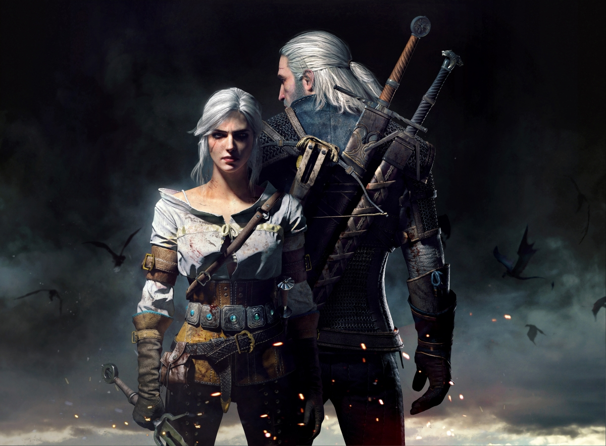

介绍：游戏改编自小说《猎魔人》系列，为《巫师》系列的第三部作品，同时也是杰洛特冒险的终曲。讲述了自《巫师2：国王刺客》后，那些想要利用杰洛特的人已经不在了。杰洛特寻求改变自己的生活，着手于新的个人使命，而世界的秩序也在悄然改变。
2015年10月，获第33届金摇杆奖最佳剧情、最佳视觉设计、最佳游戏时刻，更获得了年度最佳游戏大奖。并获得IGN 2015年度最佳游戏。 [2]2016年其扩展内容《血与酒》获得了The Game Awards 2016年年度“最佳游戏角色扮演游戏”奖。
《巫师3：狂猎》游戏视频剪辑
